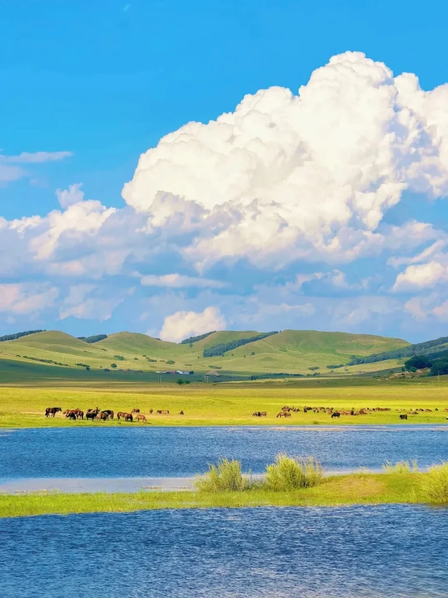

A FEW PLACES I LOVE
Three places, different feelings
China,
through
my eyes.
Shenzhen, Xi'an and Inner Mongolia are three places I wanted to share. I like the city views, the food, and how different life can feel from one place to another.
See the places →SHENZHEN · XI'AN · INNER MONGOLIA


Slow moments.
WHY THESE PLACES?
Not every day needs
to be busy.
Shenzhen is my hometown. People are often busy and time seems to matter a lot. I like the city, but I also like being able to get away from the rush for a while.
When I need a break, Dameisha Beach, Wutong Mountain and OH Bay are some of the places I think of. Xi'an feels slower to me, with its old streets and food. Inner Mongolia is completely different again — grasslands, forests and deserts, with so much space around you.
MY THREE PLACES
Three places, three moods.
A FEW FOOD FAVORITES
Always make
room for food.
The food is one of the best parts of visiting somewhere new. Here are a few things I would recommend.
SHENZHENYum cha (dim sum) and Cantonese roast meats
XI'ANNoodles and yangrou paomo (lamb soup with bread)
INNER MONGOLIALamb shaomai and local dairy products